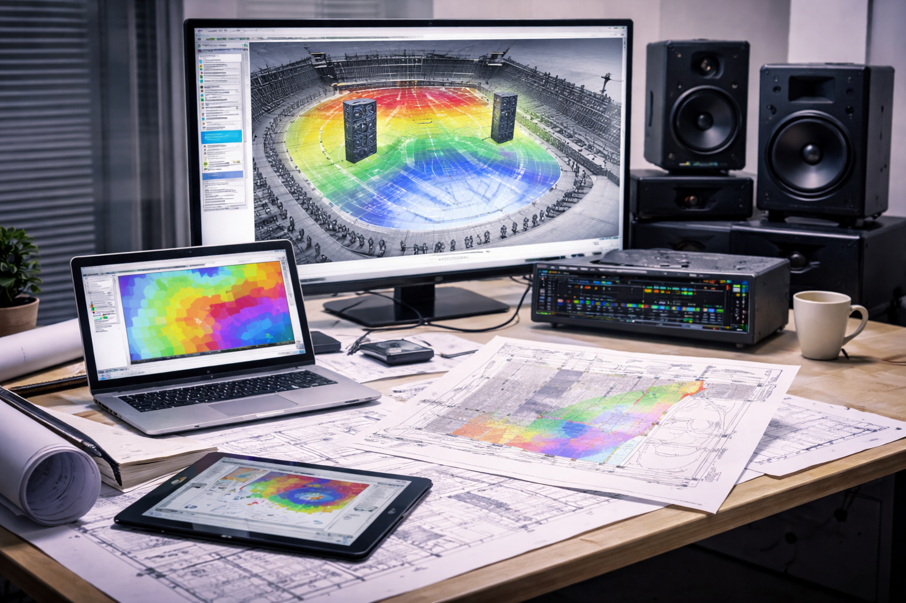
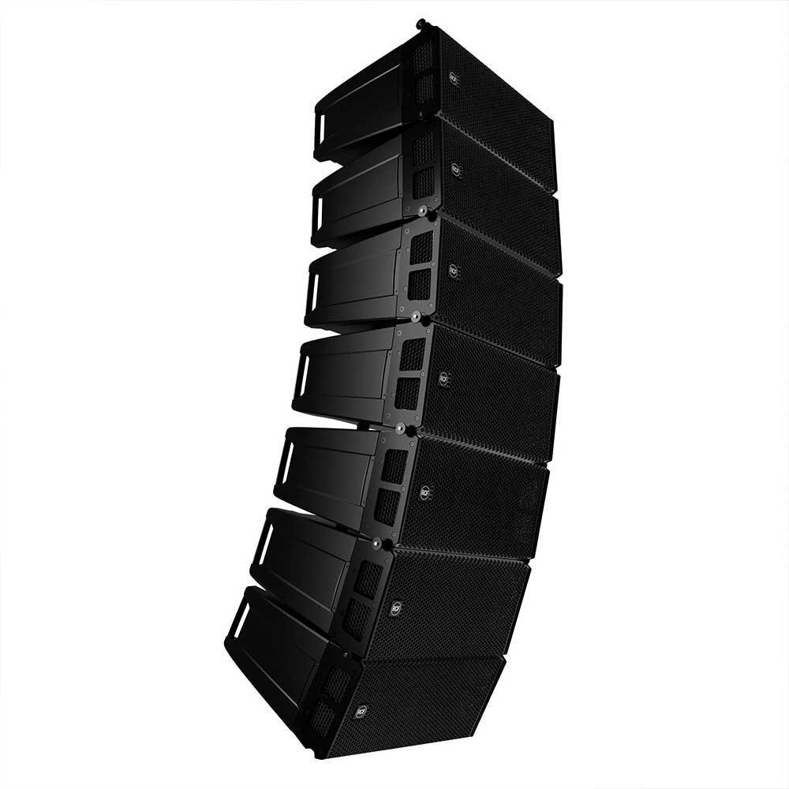

Cosa facciamo
Dal 2012 Valsound si occupa in Provincia di Sondrio di progettazione, consulenza, noleggio e assistenza tecnica relativa a sistemi audio professionali, sia destinati all'installazione fissa in luoghi di intrattenimento e spettacolo che per eventi.

Sistemi fissi da installazione
- Analisi dei requisiti e studio preliminare delle caratteristiche acustiche dei luoghi.
- Scelta con il cliente del migliore sistema di diffusione sonora in relazione alle necessità, alle caratteristiche acustiche e al budget.
- Uso di software di predizione acustica per il corretto posizionamento dei diffusori e la simulazione dei risultati ottenibili in termini di quantità e distribuzione uniforme della pressione sonora sulle aree di ascolto, anche in coordinamento a trattamenti acustici di fonoassorbimento per evitare riflessioni e riverberi.
- Scelta e programmazione di processori DSP per la gestione centralizzata dell'intero sistema da touchscreen dedicato o app mobile, la gestione dei segnali, equalizzazione e ottimizzazione del sistema. Gestione multizona e multiroom.
- Configurazione di limitatori SPL per il rispetto dei limiti in termini di dB all'interno e all'esterno degli spazi.
Programmazione domotica e integrazione audio video
- Programmazione sistemi di controllo domotico
- Realizzazione di soluzioni software customizzate
- Integrazione di sistemi di illuminazione, proiezione e di distribuzione video
- Progettazione e configurazione reti TCP/IP per il trasporto e la distribuzione dei segnali audio in infrastrutture complesse. Audio/video over IP.
- Controllo domotico di DSP audio, matrici video, sistemi di controllo luci

Pro sound & light per eventi • Service
- Noleggio con operatore e assistenza di impianti audio / luci per eventi
- Configurazioni e sistemi adattabili a diversi tipi di situazioni
- Impianti audio line array e point source
- Mixer digitali con trasporto segnali su ethernet
- Microfoni, radiomicrofoni, sistemi di monitoraggio
- Fari motorizzati led wash/beam
- Regia e programmazione luci
- Assistenza tecnica qualificata
Contatti
Valsound di Garzetti Marco · P. IVA: 00950450148 · REA: SO - 71635
Per entrare in contatto e chiederci informazioni, invia una mail a
info@valsound.it
Ti risponderemo il prima possibile!